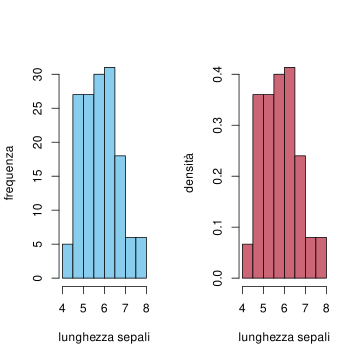
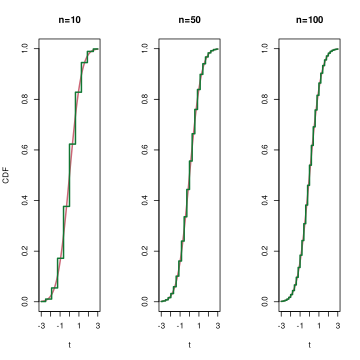
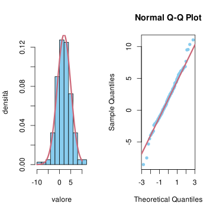

In questo capitolo accenniamo ad alcuni tra i principali teoremi limite nella probabilità. Precisamente:
Nella Sezione Sezione 8.1 definiamo le nozioni di convergenza per variabili aleatorie che useremo.
Nella Sezione Sezione 8.2 presentiamo la legge dei grandi numeri per variabili indipendenti, un risultato fondamentale che permette di collegare il concetto di frequenza delle osservazioni con la probabilità, nel caso di esperimenti indipendenti.
La Sezione Sezione 8.3 discute come estendere la legge dei grandi numeri al caso di processi più generali, ottenendo teoremi detti ergodici.
Il teorema limite centrale è presentato nella Sezione Sezione 8.4 come naturale precisazione della legge dei grandi numeri.
Accenniamo brevemente alle applicazioni ai metodi Monte Carlo nella Sezione Sezione 8.5.
Infine discutiamo nella Sezione Sezione 8.6 altri teoremi limite, ad esempio per il massimo o il minimo di variabili indpendenti.
8.1 Convergenza di variabili aleatorie
Prima di discutere i teoremi limite di questa sezione, dobbiamo specificare in che senso una successione di variabili aleatorie \((X_n)_{n=1}^\infty\) approssimi una variabile aleatoria limite \(X_\infty\) (o invertendo il punto di vista, la variabile limite \(X_\infty\) sia una buona approssimazione delle variabili \(X_n\) al crescere di \(n\)).
Ci sono molteplici nozioni, ma gli approcci principali sono essentialmente due:
si afferma che la distanza \(|X_n - X_\infty|\) diventa piccola, con grande probabilità, al crescere di \(n\),
oppure si afferma che le leggi di \(X_n\) convergono verso la legge di \(X_\infty\), ad esempio confrontandone le densità, le \(\CDF\), le \(\MGF\), i momenti, ecc.
La differenza più rilevante è che nel primo caso interviene la legge congiunta delle variabili, ad esempio tra \(X_n\) e \(X_\infty\) per costruire la variabile composta \(|X_n - X_\infty|\), mentre nel secondo caso si considerano solamente le leggi marginali. Tipicamente il primo approccio fornisce nozioni più forti di convergenza rispetto al secondo, ma entrambi sono utili.
Partendo da queste premesse, diamo due definizioni legate al primo approccio.
Siano \((X_n)_{n=1}^\infty\) e \(X_\infty\) variabili aleatorie a valori in \(\R^d\). Diciamo che \(X_n\) converge verso \(X_\infty\)
in probabilità se per ogni \(\varepsilon>0\), si ha \[ \lim_{n \to \infty} P( |X_n - X_\infty| \le \varepsilon) = 1,\] oppure, equivalentemente, \[ \lim_{n \to \infty} P( |X_n - X_\infty| > \varepsilon) = 0;\]
in media quadratica se vale \[ \lim_{n \to \infty } \E{ |X_n - X_\infty|^2} = 0.\]
In entrambi i casi vediamo che la legge congiunta di \((X_n, X_\infty)\) è rilevante ai fini del calcolo delle probabilità o del valor medio.
Osservazione. C’è una implicazione tra le due nozioni di convergenza: se vale la convergenza in media quadratica, allora vale anche in probabilità. Questo perché la diseguaglianza di Markov implica che \[ P( |X_n - X_\infty| > \varepsilon) = P( |X_n - X_\infty|^2 > \varepsilon^2 ) \le \frac{ \E{ |X_n - X_\infty|^2}}{\varepsilon^2},\] e quindi se il membro a destra è infinitesimo anche quello a sinistra lo è (osserviamo che \(\varepsilon>0\) è arbritrario ma fissato, non dipende da \(n\)).
Mentre la nozione di convergenza in probabilità è abbastanza intuitiva (si richiede che con probabilità che tende ad \(1\) le due variabili \(X_n\) e \(X_\infty\) siano vicine meno di \(\varepsilon\)) il vantaggio della convergenza in media quadratica è di poter sfruttare le proprietà di calcolo legate al valor medio e alla varianza. Ad esempio, vale il seguente risultato:
Siano \((X_n)_{n=1}^\infty\) variabili aleatorie a valori in \(\R^d\). Allora \(X_n\) converge verso una costante \(c \in \R^d\) se e solo se \[ \E{X_n} \to c \quad \text{e} \quad \Sigma_{X_n} \to 0.\]
Dimostrazione. Dimostriamolo per semplicità nel caso reale, ossia \(d=1\). Calcoliamo \[ \begin{split} \E{ |X_n - c|^2 } & = \E{ |X_n - \E{X_n} + \E{X_n} - c|^2 } \\
& = \E{ |X_n - \E{X_n}|^2 } + \E{|\E{X_n} - c|^2 } \\
& \quad + 2 \E{ (X_n - \E{X_n})(\E{X_n} - c)}\\
& = \Var{X_n} + \E{|\E{X_n} - c|^2 }
\end{split}\] perché il doppio prodotto non contribuisce: \[ \begin{split} \E{ (X_n - \E{X_n})(\E{X_n} - c)} & = \E{ (X_n - \E{X_n})} (\E{X_n} - c) \\
& = ( \E{X_n} - \E{X_n}) (\E{X_n} - c) = 0.
\end{split}\] L’espressione trovata è la somma di due quantità positive, è chiaro quindi che c’è convergenza in media quadratica verso una costante \(c\) se e solo se entrambe convergono a zero.
Veniamo ora ad una definizione di convergenza basata sul secondo approccio. L’idea più semplice sarebbe di confrontare le densità delle \(X_n\) con la densità del limite \(X_\infty\). Tuttavia tale nozione sarebbe poco utile nel caso in cui ad esempio le \(X_n\) siano tutte discrete mentre il limite è continuo. Questo ostacolo si può superare confrontando invece le funzioni di ripartizione (nel caso di variabili reali) oppure, nel caso vettoriale, confrontando le \(\operatorname{MGF}\) o le funzioni caratteristiche.
Siano \((X_n)_{n=1}^\infty\) e \(X_\infty\) variabili aleatorie a valori in \(\R^d\). Diciamo che \(X_n\) converge verso \(X_\infty\)in legge se
nel caso \(d=1\), si ha \[ \lim_{n \to \infty} \CDF_{X_n}(t) = \CDF_X(t)\] per ogni \(t \in \R\) eccetto al più i punti \(t\) in cui \(\CDF_X(t)\) ha una discontinuità di tipo salto (ossia \(P(X=t)>0\))
nel caso generale \(d \ge 1\), si ha \[ \lim_{n \to \infty} \MGF_{X_n}(t) = \MGF_{X_\infty}(t)\] per ogni \(t\) in cui \(\MGF_{X_\infty}(t)\) sia finita, supponendo che \(\MGF_X(t)\) sia finita per \(t\) sufficientemente piccolo. In alternativa, si può richiedere la convergenza delle funzioni caratteristiche per ogni \(\omega \in \R\), \[ \lim_{n \to \infty} \varphi_{X_n}(\omega) =\varphi_{X_\infty}(\omega).\]
Se \(d=1\) e la variabile \(X_\infty\) ha densità continua, allora \(\CDF_{X_\infty}\) è continua e possiamo richiedere la convergenza in ogni \(t \in \R\). Tuttavia la convergenza in legge richiede comunque meno della convergenza delle densità (anche supponendo che tutte le \(X_n\) abbiano densità continua).
Osservazione. Il fatto che le due nozioni di convergenza in legge introdotto sopra siano equivalenti se \(d=1\) è un risultato che non dimostriamo. Una ulteriore riformulazione della convergenza in legge è la seguente: vale \[ \lim_{n \to \infty} \E{ g(X_n)} = \E{g(X_\infty)}\] per ogni funzione \(g\) continua ovunque e uniformemente limitata (ossia esiste una costante \(c\) tale che \(|g(x)| \le c\) per ogni \(x \in \R^d\)).
È possibile mostrare, ma non lo faremo, che la convergenza in probabilità implica la convergenza in legge.
8.2 Legge dei grandi numeri
La legge dei grandi numeri fornisce un supporto rigoroso all’intepretazione di probabilità di una affermazione \(A\) come frequenza relativa con cui essa si realizza in una successione di esperimenti ripetuti, sotto le stesse condizioni, ma tutti indipendenti tra loro. In questa sezione ne diamo una dimostrazione usando la convergenza in media quadratica (e quindi in probabilità). Prima di affrontare il risultato generale, studiamo il caso più semplice delle estrazioni con rimpiazzo dal solito modello dell’urna.
8.2.1 Modello dell’urna
Supponiamo di avere un’urna in cui la frazione delle palline rosse è \(r \in [0,1]\). Allora se si effettuano \(n\) estrazioni con rimpiazzo, il numero \(R_n\) di palline rosse osservate ha densità binomiale di parametri \((n,r)\). In particolare ha valor medio \(\E{R_n} = nr\) e varianza \(\Var{R_n} = nr(1-r)\), ossia deviazione standard \[\sigma_{R_n} = \sqrt{ n r (1-r)}.\] Ne segue che la frequenza relativa di palline rosse osservate (sulle \(n\) estrazioni effettuate), \(R_n/n\) ha valor medio \[ \E{ R_n/n} = r\] e varianza \[ \Var{R_n/n}= \frac{n r(1-r)}{n^2} = \frac{r(1-r)}{n}.\] Passando alla deviazione standard otteniamo per la frequenza relativa \[ \sigma_{R_n/n} = \sqrt{ \frac{ r(1-r)}{n}}.\]
Informalmente, possiamo quindi scrivere la seguente approssimazione: \[ \frac{R_n}{n} \approx r \pm \sqrt{ \frac{ r(1-r)}{n}}.\] Al tendere di \(n \to \infty\) vediamo quindi che \(R_n/n\) converge verso la frazione di palline rosse sul totale \(r\), che è anche la probabilità di estrarre una pallina rossa in una singola estrazione. Precisamente, al tendere di \(n \to \infty\), il valor medio di \(R_n/n\) è costante e pari ad \(r\), mentre la varianza è infinitesima. Perciò, vale la convergenza in media quadratica \[ \E{ \abs{ \frac{R_n}{n} - r}^2 } = \frac{ r(1-r)}{n} \to 0 \] e quindi in probabilità \[ P\bra{ \abs{ \frac{R_n}{n} - r} \le \varepsilon} \ge 1- \frac{ r(1-r)}{n} \to 1 .\]
Questa è la versione della legge dei grandi numeri nel modello delle estrazioni dall’urna, che si estende ovviamente a una qualsiasi situazione in cui vi siano un grande numero, potenzialmente illimitato, di esperimenti ripetuti, tutti indipendenti tra loro, e ciascuno con probabilità di sucesso \(p \in [0,1]\). La frequenza relativa del numero di successi sul totale degli esperimenti converge quindi alla probabilità di successo di un singolo esperimento.
Tale risulto permette l’intepretazione rigorosa di probabilità come frequenza, un punto di vista piuttosto diffuso ma che comunque fin dall’inizio abbiamo notato essere troppo restrittivo per molte applicazioni – in alcuni contesti non possiamo immaginare infiniti esperimenti ripetuti.
La legge dei grandi numeri è comunque utile per la stima della probabilità \(p\) di successo in un esperimento, qualora non fosse nota. Tornando all’esempio dell’urna e riprendendo l’esempio del robot, supponiamo infatti che inizialmente non sia informato della frazione di palline rosse in essa contenuta e quindi introduca una variabile aleatoria \(R\) a valori in \([0,1]\) (ad esempio a priori uniforme, ma una qualsiasi densità andrebbe bene lo stesso). Allora, può affermare che \[ \begin{split} P( |R_n/n - R| \le \varepsilon ) & = \int_0^1 P( |R_n/n - r| \le \varepsilon |R = r) dr \\
& \ge 1- \frac{\int_0^1 r(1-r) dr }{n\varepsilon^2} = 1- \frac{1}{6n \varepsilon^2} \to 1
\end{split}\] per \(n \to \infty\), ossia con alta probabilità la frequenza relativa \(R_n/n\) è vicina alla variabile \(R\) (precisamente abbiamo mostrato la convergenza in probabilità). Notiamo che la probabilità calcolata sopra è rispetto all’informazione a priori, ossia prima di effettuare le estrazioni (o prima di essere informati dell’esito).
Osservazione. Nonostante l’apparente semplicità, la legge dei grandi numeri nel caso delle estrazioni dall’urna, o più in generale in situazioni di esperimenti indipendenti ripetuti con esito binario (successo/insuccesso) ha molteplici applicazioni. Usando questo risultato possiamo spiegare perché l’istogramma relativo ad \(n\) osservazioni di variabili indipendenti, tutte con la stessa densità debba essere molto vicino al grafico della densità teorica. Abbiamo visto l’utilità di questo fatto nella sezione Sezione 5.8 per valutare l’ipotesi di gaussianità, ad esempio dei residui di una regressione.
Siano infatti \((X_i)_{i=1}^n\) variabili indipendenti tutte con la medesima densità (ad esempio continua). Allora supponendo di considerare un rettangolo di base \(a<b \in \R\), l’istogramma delle frequenze (assolute) avrà altezza \(H(a,b)\) pari al numero delle \(X_i\) tali che \(a<X_i \le b\), mentre quello delle densità è ulteriormente diviso il numero delle osservazioni \(n\) e per la lunghezza della base \((b-a)\). Questa differenza è particolarmente rilevante se i rettangoli non hanno tutti la stessa lunghezza della base, mentre nel caso di basi con la stessa lunghezza è solamente una dilatazione nell’asse delle ordinate.
# usiamo i dati del dataset Irispar(mfrow=c(1,2))hist(iris$Sepal.Length, freq=TRUE, col=miei_colori[1], main="", xlab="lunghezza sepali", ylab="frequenza")hist(iris$Sepal.Length, freq=FALSE, col=miei_colori[2], main="", xlab="lunghezza sepali", ylab="densità")

confronto tra istogramma delle frequenze (a sinistra) e delle densità (a destra)
Possiamo quindi pensare ad un “successo” se \(X_i \in (a,b]\), con probabilità \[ r = P(X_1 \in (a,b]) = \int_a^b p(X_1 = x) dx\approx p(X_1=a)(b-a),\] dove nell’ultima approssimazione supponiamo la densità abbastanza regolare e \(b-a\) sufficientemente piccolo.
Considerando \(n\) esperimenti indipendenti si avrà quindi che \[ \frac{ H(a,b)}{n} \approx r \pm \sqrt{ \frac{ r(1-r)}{n}} \approx p(X_1=a)(b-a),\] e quindi l’istogramma delle densità, che ha altezza \(H(a,b)/(n(b-a))\), è, con alta probabilità vicino alla densità comune. Un ragionamento simile si può effettuare anche per variabili discrete, e pure per le funzioni di ripartizione e i quantili (giustificando anche l’approccio qualitativo all’ipotesi di gaussianità mediante QQ-plot).
8.2.2 Un risultato generale
Il risultato valido per la frequenza relativa dei successi in \(n\) esperimenti indipendenti si può estendere a situazioni più generali, in cui l’esito di ciascun “esperimento” sia una variabile aleatoria \(X_i\) a valori reali (in realtà anche vettoriali, ma non ce ne occupiamo per semplicità). Immaginiamo la situazione in cui si effettuano più misurazioni di una medesima quantità, affette da errori, se presenti, indipendenti o comunque poco correlati tra loro (dovuti ad esempio a circostanze esterne che non possiamo controllare). Allora la frequenza relativa dei successi può essere sostituita dalla media empirica \[ \bar{X}_n = \frac 1 n \sum_{i=1}^n X_i,\] che è una variabile aleatoria (come abbiamo già osservato nella sezione precedente la legge dei grandi numeri è un risultato di convergenza rispetto all’informazione a priori, ossia prima di essere informati degli esiti degli esperimenti, quindi \(\bar{X}_n\) non è nota).
Nel caso degli esperimenti, per dedurre la convergenza in media quadratica delle frequenze relative, abbiamo usato il fatto che la legge della somma \(\sum_{i=1}^nX_i\), ossia il numero di successi, ha densità discreta binomiale di parametri \((n,p)\). Tuttavia ripercorrendo l’argomento, basta conoscere molto meno: infatti è sufficiente che il valor medio \(\E{\bar{X}_n}\) converga a una costante \(m\) e la varianza \(\Var{\bar{X}_n}\) sia infinitesima per \(n \to \infty\): sotto queste condizioni infatti il criterio della Sezione Sezione 8.1 garantisce la convergenza \(\lim_{n \to \infty} \bar{X}_n = m\).
Sfruttando questa osservazione, enunciamo il seguente risultato, noto appunto come legge dei grandi numeri1. Notiamo che l’indipendenza può essere indebolita richiedendo solo l’assenza di correlazione.
Siano \((X_n)_{n =1}^\infty\) variabili aleatorie non correlate, tutte con lo stesso valor medio e varianza \[ \E{X_n} = m, \quad \Var{X_n} = \sigma^2 < \infty.\] Allora, si ha la convergenza in media quadratica (e quindi in probabilità) \[ \lim_{n \to \infty} \frac{1}{n} \sum_{i=1}^n X_i = m.\]
Dimostrazione. Posta \(\bar{X}_n = \frac 1 n \sum_{i=1}^n X_i\) la media campionaria, usiamo la linearità per calcolare \[\begin{split} \E{\bar{X}_n } & = \E{ \frac 1 n \sum_{i=1}^n X_i} = \frac 1 n \sum_{i=1}^n \E{X_i} = \frac 1 n \sum_{i=1}^n m \\
& = m \end{split}\] e l’ipotesi \(\Cov{X_i, X_j} = 0\) per \(i \neq j\) per ottenere che \[\begin{split} \Var{\bar{X}_n } & = \frac 1 {n^2} \Var{\sum_{i=1}^n X_i}\\
& = \frac 1 {n^2} \sum_{i=1}^n \Var{X_i} \\
& = \frac 1{n^2 } \sum_{i=1}^n \sigma^2 \\
& = \frac{1}{n^2} \cdot n \sigma^2 \\
& = \frac{\sigma^2}{n},
\end{split}\] che al tendere di \(n \to \infty\) è infinitesima.
Osservazione. Dalla dimostrazione segue che la deviazione standard della variabile \(\bar{X}_n\) è \[\sigma_{\bar{X}_n} = \sqrt{ \Var{ \bar{X}_n}} = \frac{\sigma}{\sqrt{n}},\] e quindi informalmente possiamo scrivere \[ \bar{X}_n = m \pm \frac{\sigma}{\sqrt{n}}.\]
La legge dei grandi numeri è un risultato generale, che può essere applicato in molteplici situazioni. Ad esempio, ricordando la definizione di varianza campionaria \[ \bar{\sigma}^2_n = \frac{1}{n} \sum_{i=1}^n (X_i - \bar{X}_n)^2,\] è possibile usare la legge dei grandi numeri per dedurre la convergenza in media quadratica e in probabilità di \[ \lim_{n \to \infty} \bar{\sigma}^2_n = \sigma^2,\] supponendo ad esempio che le \((X_i)_i\) siano tutte indipendenti, tutte con le stessa legge e dotate di momento quarto finito, quindi in particolare i momenti sono tutti uguali: \[ m_1 = \E{X_i}, \quad m_2 = \E{X_i^2}.\] Infatti, basta riscrivere la varianza campionaria nel modo alternativo \[ \bar \sigma_n^2 = \frac 1 n \sum_{i=1}^n X_i^2 - (\bar{X_n})^2 = \overline{ (X^2)}_n - (\bar{X_n})^2,\] e notare che sotto l’ipotesi di momento quarto finito e indipendenza, non solo \[\lim_{n \to \infty }\bar{X_n} = m_1,\] ma anche \[ \lim_{n \to \infty} \overline{ (X^2)}_n = m_2.\] Di conseguenza, usando la definizione di convergenza, si può argomentare che \[ \lim_{n \to \infty }\bar\sigma_n^2 = \lim_{n \to \infty} \sqa{ \overline{ (X^2)}_n - (\bar{X_n})^2} = m_2 - m_1^2 = \sigma^2.\]
8.3 Teoremi Ergodici
L’argomento che ha portato alla dimostrazione della legge dei grandi numeri nella sezione precedente usa fortemente l’ipotesi di non correlazione tra le variabili \((X_i)_{i=1}^\infty\). Senza questa ipotesi, la varianza della media campionaria è in generale la somma di \(n^2\) termini \[ \Var{ \bar {X}_n} = \frac{1}{n^2} \sum_{i,j=1}^n\Cov{X_i, X_j},\] e quindi non segue necessariamente che sia infinitesima, anche tenendo in conto del denominatore \(n^2\). Questo tuttavia può accadere se \(\Cov{X_i, X_j}\) è infinitesimo per “molte” coppie, come avviene spesso nel caso di processi stocastici.
Dato infatti un processo stocastico \((X_t)_{t = 1}^\infty\), ad esempio sull’insieme dei tempi \(\mathcal{T} = \cur{1,2,3\ldots}\), la media \(\bar{X}_T = \frac 1 T \sum_{t=1}^T X_t\) si può pensare come alla media della traiettoria del processo sui primi \(T\) tempi. Più in generale, se l’insieme degli stati \(E\) del processo non è un sottoinsieme di \(\R\), si può considerare una qualsiasi funzione \(g:E \to \R\) e considerare la media \[ \overline{ g(X)}_T = \frac 1 T \sum_{t=1}^T g(X_t).\] La funzione \(g\) è anche detta anche osservabile e rappresenta una quantità misurabile a partire dal processo. La legge dei grandi numeri in questo caso riguarda la convergenza al tendere dei tempi all’infinito delle variabili aleatorie \(\overline{ g(X)}_T\), \[ \lim_{T \to \infty }\overline{ g(X)}_T. \] Se si suppone che il processo \((X_t)_t\) sia stazionario, è possibile identificare il limite (se esiste) come il valor medio di \(g\) rispetto alla legge marginale in un qualsiasi istante, ad esempio nel caso di \(E\) discreto \[ \E{g(X_i)} = \sum_{ x \in E} g(x) P(X_i=x).\]
Consideriamo come osservabile \(g\) la funzione indicatrice di un qualsiasi stato \(x_0 \in E\), \[ g(x) = \begin{cases} 1 & \text{se $x = x_0$}\\
0 & \text{se $x \neq x_0$.}\end{cases}\] Allora \(\overline{g(X)}_T\) è la frazione di tempo trascorsa dal processo sullo stato \(x_0\), dal tempo \(t=1\) al tempo \(t=T\). Il valor medio invece è semplicemente la probabilità \(\E{g(X_i)} = P(X_i = x_0)\). La stessa cosa avviene se invece dell’indicatrice di uno stato, si considera l’indicatrice di un sottoinsieme \(E_0 \subseteq E\) di stati.
La possibilità di identificare le due medie, quella sui tempi \(\overline{g(X)}_T\) e quella sugli stati \(\E{g(X_i)}\) è in un certo senso analoga all’intepretazione della probabilità come limite delle frequenze sugli esperimenti ripetuti. Risultati che garantiscono tale possibilità sono storicamente detti teoremi ergodici, un termine che proviene dalla meccanica statistica.
Con una opportuna variante dell’argomento per la legge dei grandi numeri, possiamo mostrare il seguente risultato.
Sia \((X_t)_{t =0}^\infty\) un processo stazionario sull’insieme degli stati \(E\) e sia \(g: E \to \R\) una osservabile. Se \[ \lim_{t \to \infty} \Cov{g(X_0), g(X_t)} = 0,\] allora vale la convergenza in media quadratica e in probabilità \[ \lim_{ T \to \infty} \overline{g(X)}_T = \E{ g(X_0)}.\] (dove per semplicità abbiamo specificato \(X_0\), ma un qualsiasi altro tempo \(X_t\) sarebbe lo stesso, essendo il processo stazionario).
Dimostrazione. Poniamo per semplicità di notazione \(Y_t = g(X_t)\). L’ipotesi di stazionarietà di \((X_t)\) implica che anche \((Y_t)\) sia stazionario e quindi la sua funzione di autocovarianza soddisfa \[ C(s,t) = C(0, |t-s|) = \Cov{g(X_0), g(X_{|t-s|})},\] che per ipotesi è infinitesima al tendere di \(|t-s| \to \infty\). Consideriamo ora il valor medio e la varianza della variabile aleatoria \[\bar{Y}_T = \frac 1 T \sum_{t=1}^TY_t.\] Per linearità del valor medio e stazionarietà \[ \E{ \bar{Y}_T} = \frac 1 T \sum_{t=1}^T \E{Y_t} = \E{Y_0} = \E{g(X_0)}\] è costante, mentre per la varianza scriviamo \[\Var{\bar{Y}_T } = \frac 1 {T^2} \sum_{s,t=1}^T C(s,t) = \frac 1 {T^2} \sum_{s,t=1}^T C(0,|t-s|) .\] Osserviamo che, per ciascun \(k=0, \ldots, T\), vi sono al più \(2T\) coppie \((s,t)\) nella somma sopra con \(|t-s| = k\) (corrispondenti al casi \(t=s+k\) e \(t=s-k\)). Pertanto possiamo stimare \[ \frac 1 {T^2} \sum_{s,t=1}^T C(0,|t-s|) \le \frac{1}{T^2} \sum_{k=0}^T 2 T |C(0,k)| \le \frac{2}{T} \sum_{k=0}^T |C(0,k)|.\] Il fatto che la somma sopra sia infinitesima, grazie all’ipotesi che \(C(0,k)\) lo sia, è una conseguenza nota di un teorema di analisi dovuto a Cesaro. Ecco i dettagli: fissato \(\varepsilon>0\), sia \(k_{\varepsilon}\) tale che, \[
\text{ se $k> k_{\varepsilon}$, allora $|C(0,k)| < \varepsilon$.}
\] Ne segue che \[ \frac{2}{T} \sum_{k=0}^T |C(0,k)| \le \frac{2}{T} \sum_{k=0}^{k_\varepsilon} |C(0,k)| + \frac{2}{T} |T-k_{\varepsilon}| \varepsilon\] e il membro di destra al tendere di \(T \to \infty\) è più piccolo di \(2 \varepsilon\). Essendo \(\varepsilon\) arbitrariamente piccolo, concludiamo che \[\lim_{ T \to \infty} \frac{2}{T} \sum_{k=0}^T |C(0,k)| = 0.\]
Osservazione. Con un argomento simile si può ottenere un teorema ergodico anche nel caso di processi a tempi continui (con applicazioni ad esempio ai processi di Markov a salti). In tal caso la media sui tempi va intesa come l’integrale \[ \overline{g(X)}_T = \frac 1 T \int_0^T g(X_t) dt.\]
Per applicare il teorema è quindi importante verificare, oltre alla stazionarietà del processo, l’ipotesi sul limite della funzione di autocovarianza (detta anche appunto ipotesi di ergodicità). In molti modelli è possibile argomentare in generale che essa vale. Diamo i seguenti risultati senza vederne la dimostrazione.
Sia \((X_t)_{t}\) una catena di Markov stazionaria e irriducibile su un insieme di stati finito \(E\). Allora per ogni \(g: E \to \R\) vale la convergenza \[ \lim_{ T \to \infty} \overline{g(X)}_T = \sum_{i \in E} g(i) \pi_i,\] dove \(\pi = (\pi_i)_{i\in E}\) è l’unica distribuzione invariante per la catena.
In particolare, la frazione di tempo trascorsa dalla catena su uno stato è, nel limite, pari alla probabilità che la catena si trovi su quello stato.
Un teorema analogo vale per processi di Markov a salti, dove la media nel tempo è intesa come integrale. Vediamo infine il caso dei processi a stati continui. In questo caso siamo interessati alla convergenza delle medie e delle funzioni di autocovarianza campionarie.
Sia \((X_t)_{t}\) un processo \(\operatorname{ARIMA}(p,0,q)\) stazionario. Allora \[ \lim_{T \to \infty} \overline{X}_T = 0,\] e per ogni \(t\in \mathbb{N}\), \[ \lim_{T \to \infty} \frac 1 T \sum_{s=1}^T X_s X_{s+t} = C(0,t).\]
L’ultimo limite sopra mostra che la funzione di autocovarianza empirica converge a quella teorica: questo teorema, che pure vale per processi stazionari anche più generali degli ARIMA, giustifica ulteriormente l’uso della funzione di autocorrelazione empirica (tramite ad esempio la funzione acf() in \(R\)) per stimare quella teorica.
8.4 Il teorema limite centrale
Il teorema limite centrale è un raffinamento della legge dei grandi numeri, in cui si rende più precisa la convergenza delle medie empiriche, mostrando che le oscillazioni sono approssimabili tramite variabili gaussiane, qualsiasi fosse la distribuzione delle variabili di partenza. Questo risultato di “universalità” delle densità gaussiane fornisce quindi una ulteriore giustificazione della loro applicazione così diffusa in molteplici ambiti.
8.4.1 Il modello dell’urna
Torniamo all’esempio delle estrazioni con rimpiazzo da un’urna contenente una frazione \(r \in (0,1)\) di palline rosse. Posto \(R_n\) il numero di palline rosse estratte, la legge dei grandi numeri afferma (in versione informale) che vale l’approssimazione \[ \frac{R_n}{n} \approx r \pm \sqrt{ \frac{ r(1-r) }{n}}.\] Il teorema limite centrale rende più preciso il simbolo \(\pm\), mostrando che per una variabile gaussiana \(Z\) standard, ossia \(\mathcal{N}(0,1)\), vale \[ \frac{R_n}{n} \approx r + Z \sqrt{ \frac{ r(1-r) }{n}},\] dove l’approssimazione è nel senso della convergenza in legge. Equivalentemente, la variabile binomiale \(R_n\) si approssima quindi con una variabile gaussiana avente la stessa media \(nr\) e varianza \(n r(1-r)\). Possiamo visualizzare questo risultato graficamente confrontando la densità discreta binomiale e la gaussiana corrispondente.
confronto tra densità binomiale di parametri \(n=50\), \(r=1/3\) e la densità gaussiana con medesima media \(nr\) e varianza \(nr(1-r)\).
L’approssimazione vale nel senso della convergenza in legge (quindi si confrontano le \(\CDF\) piuttosto che le densità). Per ogni intervallo \([a,b]\subseteq \R\) (anche con \(a = -\infty\) oppure \(b = \infty\)), si ha che \[ \lim_{n \to \infty} P\bra{ a \sqrt{ \frac{ r(1-r) }{n}} \le \frac{R_n}{n } -r \le b\sqrt{ \frac{ r(1-r) }{n}} } = \int_a^b \exp\bra{-\frac{ z^2}{2} } \frac{dz}{\sqrt{ 2 \pi}}.\]
Per trattare meglio la convergenza conviene introdurre le variabili standardizzate delle \(R_n/n\), ossia \[Z_n = \bra{ \frac{R_n}{n}-r} \sqrt{ \frac{n }{r(1-r)}},\] in modo che la convergenza in legge sia \(\lim_{n \to \infty} Z_n = Z\), ossia \[ \CDF_{Z_n}(t) \to \CDF_Z(t)\] per ogni \(t \in \R\). Possiamo verificare numericamente la validità di questa approssimazione scrivendo \(\CDF_{Z_n}\) in termini della \(\CDF_{R_n}\), che è binomiale. Usando l’identità \[ \CDF_{aX+b}(t) = \CDF_X((t-b)/a)\] valida per \(a>0\), \(b\in \R\), possiamo scrivere \[ \CDF_{Z_n}(t) = \CDF_{R_n}\bra{ n r + t \sqrt{nr(1-r)} },\] e visualizzare graficamente tramite opportuni comandi R.
r=1/2t =seq(-3, 3, by=0.001)par(mfrow=c(1,3))plot(t, pnorm(t), type='l', lwd=2, col=miei_colori[2], xlab='t', ylab='CDF', main="n=10")n=10lines(t, pbinom( n*r + t *sqrt(n * r *(1-r)) , n, r),lwd=2, col=miei_colori[4])plot(t, pnorm(t), type='l', lwd=2, col=miei_colori[2], xlab='t', ylab='', main='n=50')n=50lines(t, pbinom( n*r + t *sqrt(n * r *(1-r)) , n, r),lwd=2, col=miei_colori[4])plot(t, pnorm(t), type='l', lwd=2, col=miei_colori[2], xlab='t',ylab='', main='n=100')n=100lines(t, pbinom( n*r + t *sqrt(n * r *(1-r)) , n, r),lwd=2, col=miei_colori[4])

confronto tra le \(\CDF_{Z_n}\) e \(\CDF_Z\) al crescere di \(n\).
8.4.2 Il caso generale
Nonostante l’evidente validità dell’approssimazione, la dimostrazione della convergenza richiederebbe qualche calcolo non del tutto immediato già nel caso delle estrazioni dall’urna. Perciò affrontiamo direttamente una dimostrazione del risultato generale per l’approssimazione gaussiana delle medie campionarie di variabili indipendenti. Tale teorema è noto come teorema limite centrale, dove l’aggettivo “centrale” si riferisce all’importanza (appunto, centrale) tra i teoremi limite nella teoria della probabilità (in particolare, non ha a che fare con il fatto che le variabili siano centrate perché standardizzate).
Ricordiamo che informalmente, la legge dei grandi numeri si scriveva come l’approssimazione \[ \bar{X}_n \approx m \pm \frac{\sigma}{\sqrt{n}}.\] Come nel caso delle estrazioni dall’urna, possiamo rendere più preciso il simbolo \(\pm\) introducendo una variabile gaussiana \(Z\) standard \(\mathcal{N}(0,1)\).
Siano \((X_n)_{n=1}^\infty\) variabili aleatorie reali indipendenti, tutte con la stessa legge e quindi valor medio \[ m = \E{X_n}\] e varianza \[\sigma^2 = \Var{X_n} \in (0, \infty)\] (che supponiamo finita). Allora, posta \(\bar{X}_n = \frac{1}{n} \sum_{i=1}^n X_i\) la media campionaria e \[Z_n = (\bar{X}_n -m ) \frac{ \sqrt{ n}}{\sigma}\] la sua standardizzata, si ha la convergenza in legge \[ \lim_{n \to \infty }Z_n = Z,\] dove \(Z\) è gaussiana standard. Esplicitamente, per ogni \([a,b] \subseteq \R\), vale \[ \lim_{n \to \infty} P( Z_n \in [a,b]) = \lim_{n \to \infty} P\bra{ a \sigma/\sqrt{n}\le \bar{X_n} - m \le b \sigma /\sqrt{n}} = \int_a^b e^{-z^2/2} \frac{dz}{\sqrt{2 \pi}}.\]
Dimostrazione. Osserviamo subito che vale l’identità \[ Z_n = \frac{1}{\sqrt {n}} \sum_{i=1}^n X'_i,\] dove \(X_i' = (X_i - m)/\sigma\) è la standardizzata di \(X_n\). Invece di dimostrare la convergenza delle \(\CDF\) mostriamo quella delle \(\MGF\), che supponiamo finita. Abbiamo già osservato nella Sezione Sezione 8.1 che le due convergenze sono caratterizzazioni equivalenti della convergenza in legge (senza dimostrarlo). Il vantaggio di usare la \(\MGF\) è che, grazie all’indipendenza, \[ \begin{split} \MGF_{Z_n}(t) & = \MGF_{\sum_{i=1}^n X'_i} (t/\sqrt{n}) = \prod_{i=1}^n \MGF_{X'_i}(t/\sqrt{n})\\
& =\bra{ \MGF_{X'_1}(t/\sqrt{n})}^n,\end{split}\] dove nell’ultimo passaggio abbiamo usato che le leggi delle \(X_i'\) sono tutte uguali, e quindi anche le \(\MGF_{X'_i}\). Ricordando che le derivate in \(t=0\) della \(\MGF\) sono i momenti e che le \(X'_i\) sono standardizzate, possiamo scrivere lo sviluppo di Taylor \[\begin{split} \MGF_{X'_1}(s) & = 1 + \E{X'_1} s + \E{(X'_1)^2} \frac{s^2}{2} + o(s^2)\\
& = 1 + \frac{s^2}{2} + o(s^2).\end{split}\] Con la sostituzione \(s = t/\sqrt{n}\), si trova \[ \MGF_{Z_n}(t) = \bra{ 1 + \frac{t^2}{2 n} + o (1/n)}^n\] che al tendere di \(n \to \infty\) è il limite notevole \((1+x/n)^n \to e^x\), da cui \[ \MGF_{Z_n}(t) \to e^{t^2/2} = \MGF_Z(t),\] avendo riconosciuto la \(\MGF\) della gaussiana standard.
Osservazione. Il teorema limite centrale, come la legge dei grandi numeri, ammette svariate estensioni. Una di queste tratta il caso di variabili aleatorie vettoriali, ossia a valori in \(\R^d\). Si può infatti mostrare che se le \((X_i)_{i=1}^\infty\) sono indipendenti, tutte con la medesima legge e in particolare stesso vettore dei valor medi \(m\in \R^d\) e matrice delle covarianze \(\Sigma\), allora si ha la convergenza in legge \[ \bra{ \bar{X}_n - m} \sqrt{n} \to Z\] dove \(Z\) è una variabile gaussiana vettoriale con densità \(\mathcal{N}(0, \Sigma)\).
8.5 Cenni ai metodi Monte Carlo
Una delle applicazioni principali dei teoremi limite è di utilizzarli insieme alle tecniche di generazione di numeri pseudo-casuali mediante opportuni algoritmi (che non descriviamo nel dettaglio). Tramite semplici comandi in R ad esempio, è possibile simulare variabili aleatorie con densità comuni (uniformi, binomiali, poisson, esponenziali, gaussiane ecc.).
# Il comando per simulare una o più variabili aleatorie con una data densità si ottiene con il prefisso `r` seguito dall'abbreviazione della densità. Vediamo ad esempio con le gaussiane.gaussiane =rnorm(200, mean=2, sd=3)# il comando genera i dati associati all'osservazione di 100 variabili gaussiane indipendenti.par(mfrow=c(1,2))hist(gaussiane, freq=FALSE, col=miei_colori[1], xlab="valore", ylab="densità", main="")intervallo =seq(-10, 10, by=0.01)lines(intervallo, dnorm(intervallo, mean=2, sd=3), col=miei_colori[2], lwd=3 )qqnorm(gaussiane, col=miei_colori[1], pch=16)qqline(gaussiane, col=miei_colori[2], lwd=3)

istogramma e qqplot di 200 variabili gaussiane indipendenti
Con opportune estensioni (ad esempio le librerie JAGS o Stan) si può realizzare variabili con densità più complesse. Le tecniche principali consistono nel simulare opportune catene di Markov.
Oltre a fornire dati aleatori ma in un certo senso “controllati” su cui testare esempi e metodi, la simulazione di variabili aleatorie può essere inserita in opportuni algoritmi, che portano il nome di metodi Monte Carlo, in cui anche problemi che non riguardano la probabilità sono affrontabili mediante simulazioni di un gran numero di variabili.
Per fare un esempio, si supponga di dover calcolare l’integrale \[ \int_{\R^d} g(x) p(X=x) d x,\] dove \(g\) e \(p\) sono note e regolari, ma la dimensione \(d\) è molto elevata. Ricorrendo ad una simulazione (purche non abbia costi computazionali onerosi) di \(n\) variabili indipendenti, tutte con densità \(p(X=\cdot)\), allora la legge dei grandi numeri assicura che per \(n\) grande, \[ \int_{\R^d} g(x) p(X=x) d x \approx \frac 1 n \sum_{i=1}^n g(X_i),\] con alta probabilità. Il teorema limite centrale garantisce invece che le oscillazioni \[ \int_{\R^d} g(x) p(X=x) d x- \frac 1 n \sum_{i=1}^n g(X_i)\] saranno circa gaussiane ma con una deviazione standard proporzionale a \(1/\sqrt{n}\). Il vantaggio di questo metodo, rispetto ad esempio ad una integrazione numerica deterministica, è che in dimensione alta (ossia se \(d\) è grande) non è particolarmente più oneroso (mentre in dimensione bassa è possibile fare di meglio).
Calcolo del momento secondo di una gaussiana standard tramite media empirica di un campione indipendente.
8.6 Cenni agli eventi estremi
Lo studio delle caratteristiche medie di una famiglia di variabili aleatorie (o di un processo) è molto rilevante ai fini pratici, ma altrettanto può esserlo quello delle caratteristiche estreme: se \((X_t)_{t \in \mathcal{T}}\) indica la temperatura di un dispositivo il cui funzionamento è garantito se è sempre compresa in un determinato intervallo di valori, è importante stimare la probabilità che la temperatura massima (o minima) raggiunta sia al di fuori di tale intervallo.
Si tratta quindi di sostituire l’operazione di media campionaria con il massimo tra \(n\) osservazioni \[ M_n = \max_{i=1, \ldots, n} X_i,\] o il minimo \[ m_n = \min_{i=1, \ldots, n} X_i.\] Supponendo che le variabili \((X_n)_{n=1}^\infty\) siano indipendenti e tutte con la stessa legge, si può investigare il limite al tendere di \(n \to \infty\) delle due variabili. Per brevità consideriamo solamente il caso del massimo (il caso del minimo è analogo).
Per comprendere \(M_n\) è utile considerarne la \(\CDF\): \[ \begin{split} \CDF_{M_n}(t) & = P( \max_{i=1, \ldots, n} X_i \le t) \\
& =P( X_1 \le t, X_2 \le t, \ldots, X_n \le t)\\
& = P(X_1 \le t) P(X_2 \le t) \ldots P(X_n \le t).\end{split}\] Nel caso di densità continue delle \(X_i\), derivando questa identità si trova la densità di \(M_n\).
Tuttavia, volendo limitarci a teoremi limite sotto ipotesi generali, supponiamo che tutte le \(X_i\) abbiano la stessa legge (e quindi la stessa \(\CDF\)) e mostriamo il seguente risultato, analogo per certi versi alla legge dei grandi numeri.
Siano \((X_n)_{n =1 }^\infty\) variabili aleatorie a valori reali, indipendenti e tutte con la stessa legge. Se \(t \in \R\) è tale che \(\CDF_{X_1} (t)<1\), ossia \[ P(X_1 >t) >0,\] allora \[ \lim_{n \to \infty } P(M_n > t)= 1\] In particolare se \(X_1\) assume con probabilità positiva (anche piccola) valori arbitrariamente grandi, allora si ha la convergenza in probabilità di \(M_n\) verso \(+\infty\).
In termini più intuitivi, se non è impossibile che le variabili possano assumere valori arbitrariamente grandi, allora tali valori prima o poi si osserveranno. Si tratta di una versione del paradosso di Borel: se una scimmia scrive completamente a caso su una tastiera, prima o poi si vedranno apparire sullo schermo dei versi di Shakespeare. Ovviamente non è specificato in quanto tempo ci si aspetta che questo accada: in media esso è inversamente proporzionale alla probabilità che l’evento accada, il che può essere estremamente grande.
Dimostrazione. Dalla formula per la \(\CDF_{M_n}\), si ha \[ P(M_n \le t) = \CDF_{M_n}(t) = (\CDF_{X_n}(t))^n \to 0\] al tendere di \(n \to \infty\).
Il teorema sopra si può rendere più preciso mostrando una versione del teorema limite centrale nello studio degli eventi estremi. In questo caso la densità gaussiana è sostituita da altre densità, a seconda della “pesantezza” delle code delle \(X_i\), ossia dell’ordine di infinitesimo di \(P(X_i >t)\). Vediamo ad esempio il caso di variabili esponenziali. Esse si usano tipicamente per i tempi di vita di dispositivi, quindi il massimo tra \(n\) sarebbe il tempo in cui \(n\) dispositivi smettono tutti di funzionare.
Siano \((X_n)_{n=1}^\infty\) variabili aleatorie indipendenti, tutte con densità esponenziale del medesimo parametro \(\lambda>0\). Allora si ha la convergenza in legge \[ \lim_{n \to \infty} M_n - \frac{ \log n}{\lambda} = G,\] dove \(G\) è una variabile con distribuzione di Gumbel, ossia con funzione di ripartizione, per \(t \in \R\), \[ \CDF_G(t) = \exp\bra{ - e^{-t}}.\]
La densità di \(G\) si ottiene derivando: \[ \frac{d}{dt} \CDF_G(t) = \exp\bra{-t-e^{-t} }.\]
Dimostrazione. Per semplicità supponiamo \(\lambda=1\), il caso generale è simile. Sia \(t \in \R\) e calcoliamo \[\CDF_{M_n - \log n}(t) =\CDF_{M_n}(t+\log n) = \bra{ \CDF_{X_1}(t+\log n)}^n.\] Ricordando che \(\CDF_{X_1}(s) = 1-e^{-s}\) per \(s>0\), e osservando che \(t+\log n> 0\) se \(n\) è abbastanza grande (anche se \(t\) è negativo), otteniamo \[ \bra{ \CDF_{X_1}(t+\log n)}^n = (1- e^{-t-\log n})^n = \bra{ 1 - \frac{e^{-t}}{n}}^n \to e^{-e^{-t}},\] per \(n \to \infty\).
8.7 Problemi
più precisamente è detto legge debole dei grandi numeri↩︎